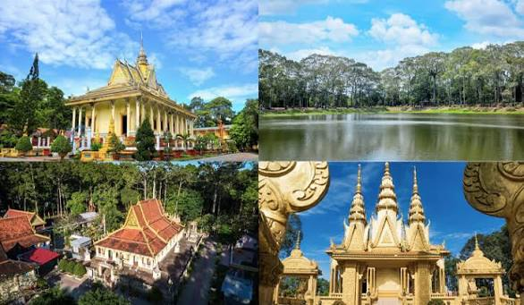

Trà Vinh là vùng đất thuộc khu vực Đồng bằng sông Cửu Long, nổi bật với vẻ đẹp bình dị của miền Tây Nam Bộ và nền văn hóa đa dạng của ba dân tộc Kinh, Khmer và Hoa. Sự giao thoa văn hóa được thể hiện qua kiến trúc chùa Khmer, các lễ hội truyền thống, phong tục tập quán và đời sống sinh hoạt của người dân địa phương. Những nét đặc sắc này tạo nên sức hấp dẫn riêng cho Trà Vinh, đồng thời mang lại nhiều tiềm năng để phát triển du lịch cộng đồng.
Đời sống văn hóa của người dân Trà Vinh rất phong phú, đặc biệt là văn hóa Khmer với những ngôi chùa có kiến trúc độc đáo và các lễ hội truyền thống như Chôl Chnăm Thmây, Sene Đôlta và Ok Om Bok. Bên cạnh đó, du khách còn có cơ hội tìm hiểu nghệ thuật múa Khmer, âm nhạc truyền thống, các làng nghề thủ công và những phong tục lâu đời được gìn giữ qua nhiều thế hệ. Ẩm thực địa phương cũng là một điểm nhấn hấp dẫn với những món ăn đặc trưng như bún nước lèo, bánh tét Trà Cuôn và nhiều món ăn dân dã mang hương vị miền Tây.
Du lịch cộng đồng tại Trà Vinh tạo điều kiện để du khách trực tiếp trải nghiệm cuộc sống của người dân, thưởng thức ẩm thực, tham quan các địa điểm văn hóa và tìm hiểu những giá trị truyền thống của địa phương. Thông qua việc xây dựng website hỗ trợ hộ dân quản lý và giới thiệu dịch vụ du lịch cộng đồng, các hộ dân có thể quảng bá dịch vụ lưu trú, ăn uống, tham quan và trải nghiệm văn hóa đến nhiều du khách hơn. Website góp phần kết nối người dân với khách du lịch, hỗ trợ quảng bá hình ảnh Trà Vinh và thúc đẩy phát triển du lịch địa phương theo hướng bền vững.